Day,
Month
00,
Year
00:
00:
00
AM
Hailed as the Summer Capital of the Philippines, Baguio is the top destination to go to if you want to take a break from the tropical heat in the lowlands. With average temperatures ranging from 15-23°C, the city rarely experiences temperatures higher than 26°C even during the warmest parts of the year. Because of this climate, Baguio is also home to beautiful plants that wouldn’t usually survive elsewhere in the county. Also nicknamed the City of Pines, you’ll be in for a treat with all the beautiful flowers and lush vegetation as you enter the vicinity. It will truly feel as if you’re entering a different world.
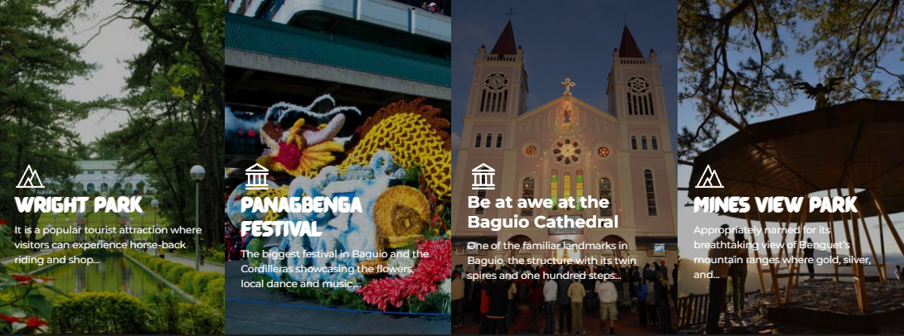When visiting Ifugao, make sure to get a taste of their famous Tinawon rice. While searching for rice keep an eye out for the bulul. It is a carved wooden figure used to guard their rice crops. If you haven’t had enough of rice yet, visit UNESCO cultural landscapes, the Rice Terraces of the Philippines and scale the 2,000 year old Banaue Rice Terraces carved into the mountains by Ifugaos. Cap off your trip by attending festivals, Gotad Ad Ifugao, held every June to showcase their age old cultures and traditions; where one can participate in the traditional wooden scooter race.
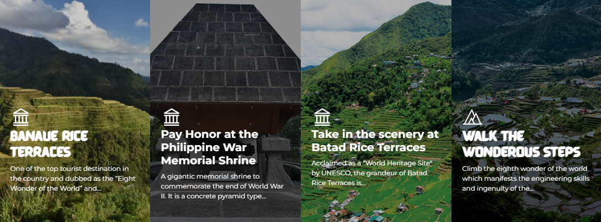One of the favorite quick weekend destinations of young Metro Manila dwellers. This laid-back coastal town is famous for its surfing spots but what not a lot of people know is that it’s also brimming with other natural and heritage attractions and cultural activities like red clay pottery, grape picking, loom weaving, churches for pilgrimage tours, waterfalls, and eco-tours. Discover what else La Union has to offer and stay for more than a quick weekend.
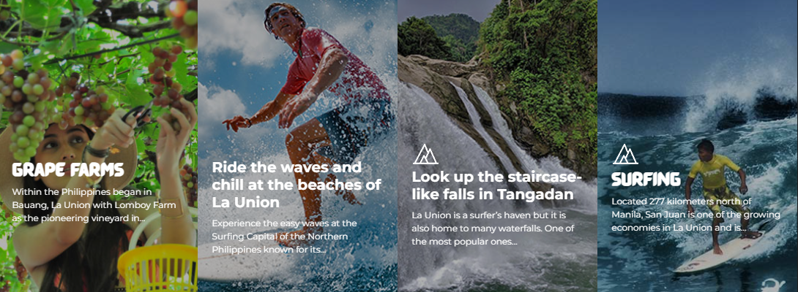In Ilocos Sur, you’ll be delighted to step into the picturesque Vigan, a UNESCO World Heritage site. It feels like time traveling to the past, as the Spanish-era houses have been well-preserved over the years. While walking in the streets, don’t forget to grab delicacies that are unique to the town such as Vigan longganisa and Ilocos empanada.
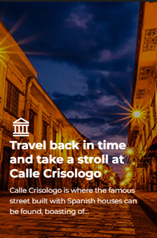Manila is an excellent hub for Philippine culture, history, shopping, and nightlife. You’ll be greeted with lively streets teeming with cars, buildings, and people with high energy, but you’ll also never run out of fun activities to do.
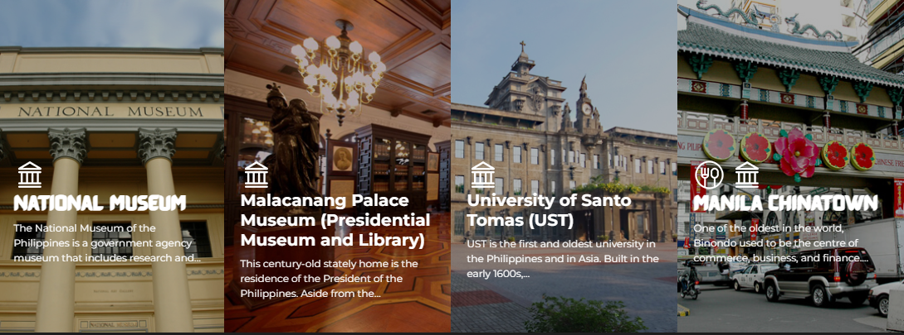Visit the capital of Palawan, home of the UNESCO World Heritage site and famed Underground River. Travelers will have to pass through here when heading for other popular Palawan destinations such as El Nido and Coron. However, there’s more than meets the eye in The City in a Forest. You’ll be surprised to find out that Puerto Princesa has natural and cultural wonders to offer for different kinds of travelers as well.
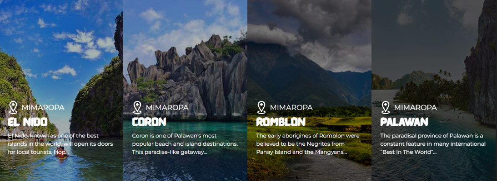Coron is one of Palawan’s most popular beach and island destinations. This paradise-like getaway comprises of the eastern half of Busuanga Island, Coron Island, and 50 other islets within the vicinity, all of which are separate from the main Palawan island. It has caught the attention of many due to its World War II wreck diving spots, beautiful rock formations, and unbelievably clear waters. It is also considered the more quiet and laidback sibling of El Nido, another famous Palawan destination because of its gorgeous waters and scenery. Coron certainly has a unique charm to it and worth adding to your travel bucket list when in the Philippines.
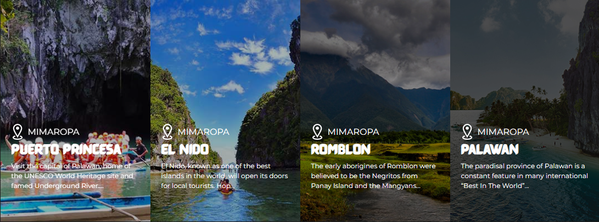Being the Philippines’ top tourist draw and most famous beach took its toll on the island of Boracay. After taking a break for 6 months, Boracay reopens greener than ever—and everything is pristine like never before. Learn more about the new Boracay and be prepared to fall in love all over again. With glorious White Beach and the country's best island nightlife on its resume, it's easy to understand why Boracay is the Philippines' top tourist draw. Alas, the tiny island proved too popular for its own good: In 2018 Boracay was placed in "rehab," closed for 6 months to ease the strain on its fragile environment and fix the infrastructure and carrying capacity.
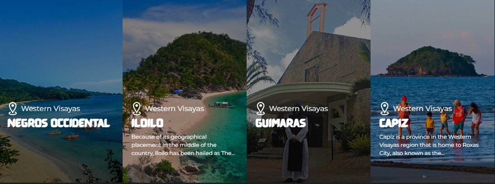The home of the famous Chocolate Hills, Bohol is one of the most visited destinations in the Central Visayas region of the Philippines. The island province offers breathtaking spots for history buffs, beach lovers, and adrenaline junkies. Bohol is comprised of one major island and 73 smaller ones surrounding it, so you'll have plenty of places to explore during your trip here. One thing’s for sure: You’ll enjoy every second of your stay and love the diversity that Bohol offers.
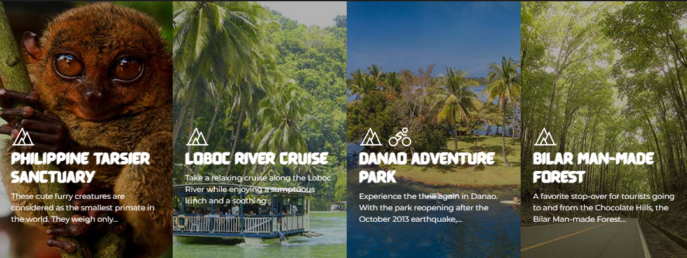An island province in the Philippines, boasts natural beauty and attractions that appeal to nature lovers and adventure seekers.
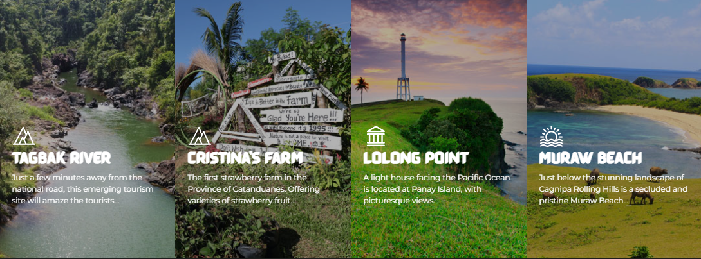Davao City is the regional center of Davao Region. It is the most populous city in Mindanao and the third largest city in the Philippines. Known for its bustling economic activities, urban build-up and modern amenities, Davao City is one of the most important economies in the island, and the third most important urban center in the Philippines.
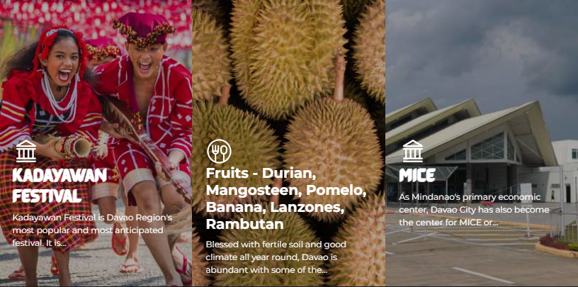Iligan City has 23 confirmed waterfalls with 39 others reported by local barangay heads. The most famous among these is the Maria Cristina Falls which was harnessed by the National Power Corporation in the 1950s. The falls generate electricity to power not just the City of Iligan but almost all of the Island of Mindanao.
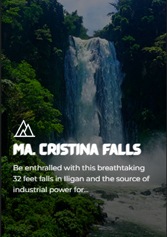Cagayan de Oro City stands as the business, trade, information technology, and adventure tourism center of Mindanao. In fact, it has become the leading convention center for Visayas and Mindanao. Those planning to hold conventions or similar events can select from a wide range of facilities including large convention halls and affordable training centers. As the "City of Golden Opportunities", it is considered as the regional growth capital of Northern Mindanao and the focus of investment in the region. It is also the transshipment point for agricultural and industrial produce of nearby provinces.
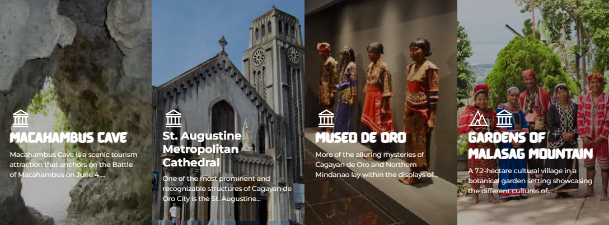Sultan Kudarat was once a part of the former empire province of Cotabato and is located in the southwestern part of the island of Mindanao. Hundreds of first class caves are actually found in this province. The province is also the top producer of coffee in the Philippines.
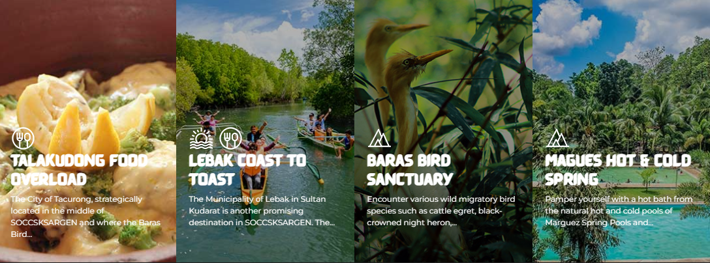Located in the southern tip of the Philippines, a tropical paradise, is the Province of Sarangani. Nature trippers find refuge in the clean peaceful white sand beach. Dive and snorkeling fanatics can’t get enough of the marvelous diving grounds where exotic and untouched coral gardens spread out. One will be captivated with the colorful marine life and it will be no surprise when one gets hooked in Sarangani’s haven of amazing marine treasures.
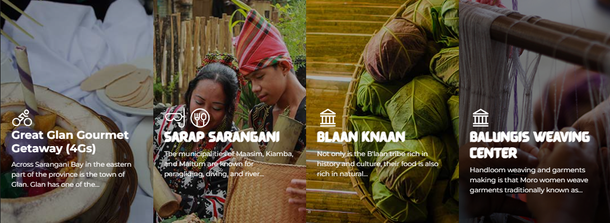(n.d.). Home - Love the Philippines! Welcome to the DOT's Corporate Site. Retrieved November 27, 2023, from http://www.tourism.gov.ph/
(n.d.). Explore more things to love! | Department of Tourism Philippines. Retrieved November 27, 2023, from https://philippines.travel/
\/. (2023, June 16). YouTube. Retrieved November 27, 2023, from http://www.bridgestravel.com/philippines/philippines.htm
Culture of the Philippines. (n.d.). CSUB. Retrieved November 27, 2023, from https://www.csub.edu/pacificrim/countryprospectus/culture.htm
Demographics of the Philippines - statistics & facts. (2023, June 2). Statista. Retrieved November 27, 2023, from https://www.statista.com/topics/5799/demographics-in-the-philippines/#topicOverview
Furlong, M. J. (n.d.). Demographics of the Philippines. Wikipedia. Retrieved November 27, 2023, from https://en.wikipedia.org/wiki/Demographics_of_the_Philippines
History of the Philippines | People, Spain, United States, Revolution, Map, & Facts. (2023, October 16). Britannica. Retrieved November 27, 2023, from https://www.britannica.com/topic/history-of-Philippines
Philippines History • FamilySearch. (2022, December 5). FamilySearch. Retrieved November 27, 2023, from https://www.familysearch.org/en/wiki/Philippines_History
Philippines | History, Map, Flag, Population, Capital, & Facts. (n.d.). Britannica. Retrieved November 27, 2023, from https://www.britannica.com/place/Philippines#ref23724